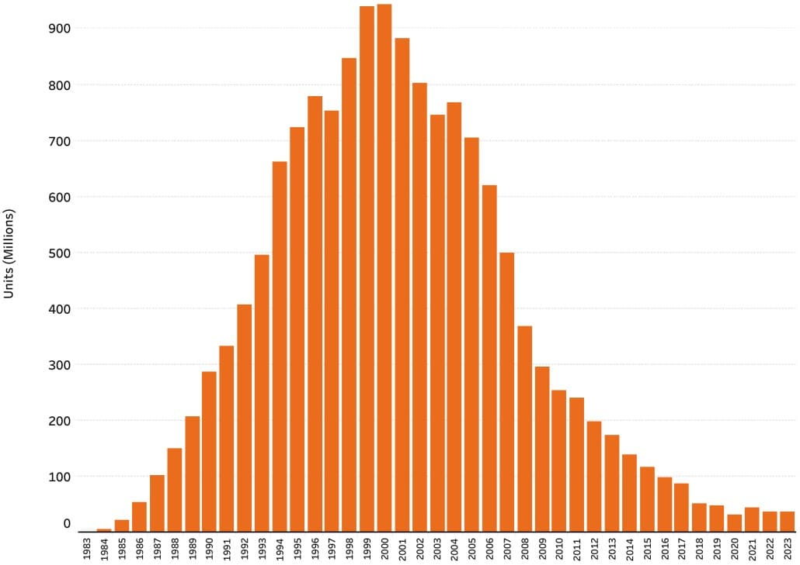
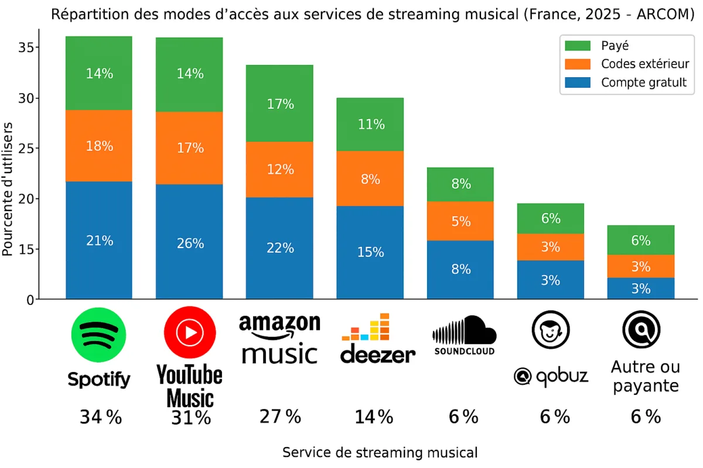

Métamorphoses du concept-album
Arthur Quet
// La version podcast est légèrement plus épurée et réduite que
la version écrite, mais contient des extraits audios //
Bonjour et bienvenue dans le podcast-mémoire d'Arthur
Quet.
Aujourd'hui, nous allons parler des évolutions de l'album, et
plus particulièrement du concept-album dans la musique
électronique depuis l'avènement du streaming. Mon objectif est
d’interroger ses transformations, comprendre d'où elles viennent
et où elles vont.
Mais d'abord, qu'est-ce qu'un concept-album ? D'après Roy Shuker dans Popular Music : The Key Concepts (Routledge, 2002), il s'agit d'un terme discologique qui traduit la volonté de la part d'un artiste ou d'un groupe de créer une œuvre où toutes les pistes sont globalement liées à un thème, une idée ou une histoire, contrairement aux albums plus typiques constitués de pistes sans liens apparents entre elles. Ainsi, peut être dit « concept » tout album faisant preuve d'une certaine cohérence interne et assumant une certaine unité, que ce soit sur le plan des thèmes abordés ou au niveau de l'esthétique choisie.
Ma problématique est la suivante :
Le concept-album à l'épreuve du streaming : survie ou mutation
d'un format artistique dans la musique électronique
contemporaine ?
Pour y répondre, nous allons explorer deux hypothèses.
Première hypothèse : le concept-album comme forme dominante
disparaît au profit de niches spécifiques.
Seconde hypothèse : le concept-album ne disparaît pas mais mute
vers des formes d'"album-œuvre" plus larges.
Pourquoi se concentrer sur la musique électronique contemporaine ? Parce que ce cadre, à la croisée de la technologie, de l'économie numérique et des évolutions esthétiques, offre un terrain particulièrement riche pour interroger le format concept-album et surtout les conditions qu'impose le streaming. C'est dans ce contexte que l'album se révèle soumis à des défis inédits : mutation, adaptation, disparition possible ou reconversion en "album-œuvre". La musique électronique incarne directement ces transformations techniques, industrielles et esthétiques.
Nous parlerons donc d'albums et de mouvements sonores des années 2000 à aujourd'hui, une période qui bouleverse la musique et la manière dont on l'écoute. Une ère ultra-connectée où le streaming influence les pratiques, la créativité des artistes et dessert parfois leurs projets. Mais ces bouleversements font aussi émerger un large panel musical qu'il serait dommage d'ignorer.
Avant toute chose, laissez-moi vous recontextualiser et vous raconter brièvement l'histoire du concept-album.
Avec l’apparition du format long play, ou longue durée abrégé par les lettres “LP”, vers la fin des années 1940, les artistes ont eu la possibilité de considérer l’album comme un ensemble cohérent, plus qu’une simple collection de singles.
Mais c’est surtout dans les années 1960 que l’idée d’album-concept a explosé, en particulier dans la musique rock et populaire. On peut parler des Beatles avec leur album nommé Sergeant Pepper's Lonely Hearts Club Band, sorti en 1967, qui est considéré comme le “vrai” premier album-concept tel qu’on le définit aujourd’hui : chansons reliées par une structure, une esthétique globale, un concept d’« album comme œuvre » ; plutôt qu’un simple recueil. Je pense tout de même que l'évolution s'est faite petit à petit du simple album vers l'album-concept, il n'y a pas réellement de "premier"; mais celui-ci à marqué les esprits de beaucoup de groupes de cette époque comme The Who avec leur album-concept Tommy, ou David Bowie avec The Rise and Fall of Ziggy Stardust and the Spiders from Mars puis bien évidemment Pink Floyd avec The Dark Side of the Moon qui fût et qui est toujours la référence même du concept-album : thématiques existentielles (temps, folie, pression sociale, aliénation), cohérence musicale et sonore, transitions soignées entre morceaux, on assiste donc à une création d’un tout uni.
Dès lors, cette approche est devenue de plus en plus naturelle, notamment dans les styles rocks et un peu plus tard dans beaucoup d’autres genres musicaux, parce que l’album est vu non plus comme une collection de chansons, mais comme une œuvre à part entière, un espace de création plus vaste.
Il est vrai que le terme de "concept-album" est utilisé
principalement au travers des genres rock, pop et de musiques
dites populaires. Cependant, il s'étend bien au-delà de ces
cadres.
On peut parler de Brian Eno avec son concept-album Music For
Airports, sorti en 1978, qui a été conçu dès le départ
autour d’une idée directrice très claire : créer de la musique
d’“ambiance” 🔊 destinées à des espaces publics comme un
aéroport, pour “apaiser” l’atmosphère et offrir un son de fond à
la fois discret et esthétique.
L’intention formulée par Eno lui-même n’était pas simplement de
produire des “morceaux”, mais de sculpter un espace, un paysage
sonore dans lequel l’auditeur peut flotter, oubliant l’idée de
piste distincte. Music For Airports est une autre forme
de concept-album que les LPs rock : il n'est pas basé sur une
narration, ni un personnage ou une progression, mais plutôt sur
une façon de "faire" la musique. Il cherche une écoute
particulière d'une audience. Soit, c'est une approche plus
conceptuelle et expérimentale, mais on retrouve entièrement un
"concept" et un album regroupant ses quatre longues nappes
sonores et abstraites.
On peut aussi parler de la musique électronique, qui est devenue un terrain presque aussi fertile que le rock pour le concept-album. Kraftwerk ou Vangelis dans les années 70', Konrad Becker (MONOTON) ou Beverly Glenn‑Copeland dans les années 80', The Orb ou Underworld dans les années 90' et Radiohead, Stupeflip ou Burial dans les années 2000.
Le concept-album est principalement reconnu sous la forme d'un objet d'écoute en vinyle 12 pouces, le format initial du LP. Mais dès les années 1990, le CD devient le médium le plus commercialisé et le plus courant, grâce à sa facilité de production et à son temps d'écoute nettement supérieur. Toutefois, la part des concept-albums diminue déjà face à la vente massive des "tubes" et des albums classiques, souvent commerciaux. Vers la fin des années 1990 et le début des années 2000, l'industrie musicale atteint son sommet avec les ventes de CD. La musique électronique se l'est vite approprié, par sa transposition facile, adaptée et réfléchie pour une compression numérique MP3. Le concept-album était "cadré" par cet objet d'écoute : un temps limité, parfois doublé, avec une pochette, une illustration ou même un livret à l'intérieur. Mais c'est surtout une continuité, un fil rouge, ou devrais-je dire, un sillon. Un flux qui enchaîne les morceaux, nous conseillant, voire nous obligeant à écouter dans l'ordre établi par le groupe ou l'artiste. Beaucoup affirmeront que la beauté d'un concept-album réside dans sa capacité à être écouté tel que l'artiste l'a imaginé, dans son ensemble.
Puis vient l'ère du World Wide Web, depuis 1999 la musique commence à être téléchargée illégalement comme sur Napster ou Soulseek et plus tard légalement, en 2003 avec l’Itunes Store. Et d'une façon logique, dû à la connexion internet limitée et au peu de stockage du matériel d'écoute de chacun : l’encodage MP3 fut créé. Un format réduisant considérablement la qualité du son et donc sa taille presque sans pouvoir l'entendre. Puis avec ces contraintes on commença aussi à sélectionner, faire des choix, prendre les sons qu'on préfère… Moi-même, en 2010, j’avais un baladeur mp3, ne pouvant mettre que 20 morceaux de musique de 4 minutes, je choisissais donc mes “préférées” et aussi les plus courtes pour pouvoir en mettre plus. Cependant, cette méthode alimente cette "boucle” de sélection où plus un morceau est sélectionné par le public, plus il sera diffusé par ce même public et resélectionné, laissant les musiques voisines de l’album dans l’ombre. Cela ressemble à l’Effet Matthieu en sociologie, désignant un processus où ceux qui ont déjà quelque chose (popularité, choix, ressources…) en reçoivent encore plus, renforçant ainsi leur avantage initial.
On peut donc imaginer que, peu à peu, le concept-album sera abandonné . Ce modèle d’écoute ou, devrais-je, dire "de consommation" de la musique s'est banalisée et perdure encore de nos jours au travers des plateformes de streaming audio, même si on a maintenant les moyens et le matériel pour pouvoir se permettre de télécharger, stocker puis d'écouter des albums en entier. C'est donc une logique différente qui s'est installée lors de cette consommation, au départ sacrificielle ; dorénavant réellement sélective et beaucoup plus personnelle, en créant des playlists à partir d'un simple thème, d'un genre, d'une case. Donnant à l'auditeur le pouvoir de fragmenter des albums pour en faire une collection de singles, en oblitérant l'univers, le storytelling au sens plein, l'écoute construite et imaginée par l'artiste.
Je vais citer une reportage d’ARTE nommé “Comment le streaming a mangé la musique”, racontant la création de la playlist en 2014 :
De nos jours, les plateformes de streaming audio telles que Spotify, Deezer ou Apple Music offrent des playlists hebdomadaires, non plus gérées par des éditorialistes mais par des algorithmes. Elles nous permettent de faire des découvertes de singles ou d'un titre tiré d'un album, l'isolant plus que tout dans une masse de sonorités éloignées à ce dernier. La “découverte” est la meilleure arme du streaming audio, car elle nous absorbe, c’est une “récompense” facile ; qui va, soit nous faire plaisir, mais aussi rendre “accro” à la plateforme. L'album devient aux yeux de presque tous.tes qu'un simple recueil de singles "à choisir" ou “à la carte” au lieu de faire partie d’un “menu”. Le concept-album se retrouve alors davantage décrédibilisé, brisé et son sens disparaît, surtout au milieu d'une playlist en écoute aléatoire.
Le concept-album à l’épreuve du streaming :
survie ou mutation d’un format artistique dans la musique
électronique contemporaine ?
Pour approfondir les connaissances et les interprétations sémantiques de chaque terme clé, par rapport à la problématique. Vous pouvez à tout moment consulter la partie supplémentaire des définitions, seulement disponible à l’écrit. Je définis ce qu'est le concept-album, le streaming, la survie, la mutation, le format artistique et la musique électronique contemporaine.
La définition d'après Roy Shuker dans Popular Music : The Key Concepts (Routledge, 2002) :* Un album-concept, (de l'anglais concept-album*), est un terme discologique qui traduit la volonté de la part d'un artiste ou d'un groupe de créer une œuvre où toutes les pistes sont globalement liées à un thème, une idée ou une histoire contrairement aux albums plus typiques constitués de pistes sans lien apparent entre elles. Ainsi, peut être dit « concept » tout album faisant preuve d'une certaine cohérence interne et assumant une certaine unité, que ce soit sur le plan des thèmes abordés ou au niveau de l'esthétique choisie.
La définition vue sur Wikipedia et mentionnée en
introduction, soulève cependant plusieurs débats.
Comme le note une thèse de Julia Kuzmina nommée “Histoire et
sémiologie narrative des albums concepts” :
Comme il est soulevé dans cette citation, Sergeant
Pepper's n'est PAS un concept-album au sens strict. L'idée
de départ était que les Beatles créent un alter ego
fictif qui donnerait un concert mais ce concept n’apparaît que
dans les deux premières chansons et la reprise vers la fin
et
la majorité des chansons n'ont aucun lien narratif entre elles
ni avec ce concept de groupe fictif.
Mais alors pourquoi est-il quand même considéré comme tel ?
Car il a une unité esthétique forte : une cohérence sonore et des productions révolutionnaires. Un enchaînement sans pause entre plusieurs morceaux. Une pochette iconique pensée comme partie intégrante de l'œuvre. Et enfin, une ambition artistique et un contexte qui fait rupture avec la logique commerciale de l'époque. C'est donc un concept-album au sens où "l'album lui-même EST le concept".
Dans un entretien avec David Montgomery, Bob Ezrin, célèbre producteur canadien, notamment de Heavy Metal, questionne la nécessité même de la notion d’album concept :
On peut remarquer aussi que le mot “concept” devant “album”
n’existe plus vraiment de nos jours, peut-être pour faciliter le
langage, ou bien parce que ce n’est peut-être plus aussi
original qu’avant, que le concept n’est plus aussi “concept”
dans le sens “idée efficace” ou “novatrice”.
Bob Ezrin l’a bien remarqué, ça ne veut plus vraiment dire
quelque-chose et encore moins de nos jours.
Cependant, la définition proposée dans Wikipédia a également sa
valeur : le mot “concept” veut dire dans sa simple définition :
une idée générale ; une représentation abstraite d'un objet ou
d'un ensemble d'objets ayant des caractères communs. Donc dans
la culture musicale actuelle, un album à en sous-texte cette
définition là, du concept.
Il y a aussi une autre vision des albums concepts qui
m'intéresse. Proposée par un chercheur : Alex Kasner.
Il distingue trois caractéristiques essentielles de l’album
concept :
- la narration thématique (la définition Wikipédia s’arrête
là),
- la virtuosité musicale (Élaboration technique et complexité de
la texture musicale au niveau de la composition et de
l'interprétation),
- la collaboration cross-artistique (Œuvre résultant de
l'interaction entre multiples créateurs et disciplines (comme le
visuel ou la poésie)).
Nous conserverons pour le moment cette définition du
concept-album et redéfinirons, en conclusion, ce qu’est le
concept-album d’aujourd’hui à partir des recherches et des liens
développés tout au long de ce mémoire.
Le streaming (sous-entendu streaming audio, mais
aussi vidéo) désigne un mode de diffusion et de lecture de
musique en continu sur Internet, sans que l’utilisateur ait
besoin de télécharger physiquement les fichiers audio sur son
appareil. Il s’appuie sur un protocole de transmission en flux
continu qui permet d’accéder immédiatement à un contenu musical
dès que l’utilisateur en fait la demande.
On peut penser à Spotify, Deezer, Apple Music mais aussi à Tidal
pour les audiophiles ou SoundCloud. Tout comme Youtube ou même
Instagram et TikTok qui hébergent des clips vidéos qui peuvent
être des reprises ou des “trends” qui utilisent un son, une
musique raccordée à une vidéo faite main, pour parler d’autres
choses.
Ici, survie désigne la capacité du concept-album à persister comme forme artistique cohérente malgré la domination du streaming. Le terme met l’accent sur sa continuité et sa présence effective dans le paysage musical contemporain malgré ces contraintes. Cette persistance peut être perçue comme un acte de résistance ou de fidélité à une forme artistique élaborée. De plus, elle s’oppose à la logique de gratification instantanée promue par la plupart des plateformes de streaming.
Ici, Mutation renvoie à la transformation du concept-album sous l’effet du streaming ou du moins face à l’industrie musicale : il peut se réinventer dans sa structure, son mode de diffusion et ses stratégies créatives pour rester pertinent, comme accessible, dans un environnement où les formats courts dominent. Contrairement à la survie, il n’applique pas les principales méthodes initiales qui définissent le concept-album, cependant il cherche un nouveau format artistique voisin à ce dernier.
Un format artistique désigne la manière structurée et conventionnelle dont une œuvre est conçue, organisée et présentée dans un médium artistique donné. Dans le domaine musical, cela inclut les normes, les règles et les cadres (comme le single, l’EP, le concept-album, la performance, et cetera…). Cela conditionne à la fois la création, la diffusion et la réception de l’œuvre, influençant la façon dont le public expérimente et interprète cette musique. Le format artistique n’est pas neutre : il façonne les choix créatifs, la cohérence narrative ou esthétique d’un projet et sa compatibilité avec les usages culturels et technologiques contemporains.
Par “musique électronique contemporaine”, renvoie à
l’ensemble des œuvres musicales produites principalement à
l’aide d’outils de production numérique : synthétiseurs,
ordinateurs et logiciels. De nos jours, c’est en grande partie
de la musique assistée par ordinateur (dit MAO).
Ce terme renvoie à une pratique musicale qui repose sur la
création et la manipulation de sons par des moyens
électroniques, et qui se caractérise souvent par des textures
sonores produites ou transformées numériquement. La musique
électronique a un grain particulier, où on sent une part de
"machine", des patterns répétitifs, un mix presque "trop"
parfait et des samples audios qui bouclent.”Electronique” n'est
pas qu'une essence de numérique ou d'analogique, c'est avant
tout une façon de faire.
« Contemporaine » pour désigner les musiques actuelles qui continuent de susciter des réflexions sur les pratiques créatives, économiques et d’écoute dans le monde musical d’aujourd’hui, en particulier à l’ère du streaming.
On peut se demander ce qu’implique concrètement “Le
concept-album à l’épreuve du streaming”.
Eh bien, nous avons deux hypothèses qui vont nous permettre de
répondre à la problématique. Voici la première :
Le concept-album comme forme dominante est en train
de disparaître ; seules certaines “niches” d’intérêts continuent
d’exister et à émerger. Pour le reste, le modèle de type “album”
cède largement à la logique du single et de la
playlist.
> Le concept-album devient un format minoritaire,
apprécié par une fraction restreinte d'auditeurs embarqués,
engagés et surtout connaisseurs, mais n’a plus la puissance
qu’il aurait pu avoir dans un contexte dominant.
L’idée que l’album et a fortiori le concept-album perdent
leur statut de forme artistique dominante dans la musique
actuelle n’est pas qu’une simple impression nostalgique ; mais
un phénomène sociotechnique observable à travers l’évolution des
usages, des stratégies de production et des pratiques d’écoute
depuis l’avènement du streaming audio. Dans les années 2000,
l’objet « album » constituait encore le principal vecteur de
visibilité et d’élaboration esthétique pour un artiste, écouté
en majorité sur CD ; aujourd’hui, ce rôle est largement disputé
et souvent supplanté par des formats plus fragmentés comme
optimisés pour l’écoute instantanée. Par exemple, le transport
physique de CDs aux États-Unis est passé de 942.5 millions
d’unités au début des années 2000 à moins de 32.9 millions en
2024.
(Source : RIAA, graphique ci-dessous)

Ensuite, 73% des personnes déclarent écouter de la musique principalement via des services de streaming audio en 2023 (Source : IFPI), reflétant ainsi une disparition massive du marché physique face à la montée du streaming.
Les plateformes de streaming audio favorisent, de manière intrinsèque, des écoutes segmentées, centrées sur la découverte de morceaux isolés plutôt que sur l’engagement prolongé avec un projet complet. L’algorithme n’encourage pas l’écoute linéaire d’un album entier : il privilégie les playlists thématiques, les recommandations basées sur des similarités sonores et les « hits » du moments, immédiatement reconnaissables. Par exemple en 2023, en France, 80 % de la consommation en streaming audio provient des 100 000 titres les plus écoutés (Source : SNEP) alors qu’il existe plus de 100 millions de morceaux disponible en streaming, ce qui illustre la prédominance des morceaux singuliers dans les usages contemporains. Cette logique de consommation, basée sur la gratification immédiate et la circulation rapide des morceaux, diffuse l’attention de l’auditeur loin de toute expérience immersive ou narrative qui nécessiterait une écoute suivie de plusieurs titres.
On n’écoute plus, on consomme la musique. Comme le dit très bien un reportage d’ARTE dans leur format Tracks intitulé “Faut-il réapprendre à écouter de la musique ?”, je cite :
On parle ici d’une écoute passive. On remplit nos oreilles pour remplir notre tête, chasser l’ennui ou la fatigue. Alors la musique ne devient plus que fonctionnelle, l’art disparaît et se soumet aux algorithmes. Par exemple, j'ai pendant longtemps "consommé" de la musique, cela me motivait au quotidien mais je ne pensais plus vraiment à moi même. Alors j’ai saturé, je n’arrivais plus à être créatif, à ressentir une profonde inspiration ou plaisir à découvrir un album qui m’aurait normalement touché. J’ai donc cessé de consommer et j’ai recommencé à écouter. Ne prendre qu’un petit temps dans la journée pour me concentrer sur l’écoute, les sonorités, la structure et les émotions, puis le reste du temps être dans le silence, ou plutôt dans le son ambiant. La musique c’est comme du gâteau, si on en mange toute la journée, chaque minute, on finira par être écoeuré et en perdre le goût. Tandis que si on n’en prend qu’une seule part le soir, on va pouvoir la déguster pleinement.
Ce sont les mêmes ressorts économiques qui poussent les
plateformes à maximiser le nombre de streams, incitant
généralement les artistes à repenser leurs stratégies de
sorties. Les singles deviennent les unités de base de la
présence musicale. Les artistes, en particulier ceux qui ne
disposent pas d’une audience solide et réactive ont d’autant
plus intérêt à multiplier les sorties courtes, visibles dans les
flux et exploitables individuellement par les algorithmes,
plutôt qu’à attendre de travailler plusieurs années pour publier
un album cohérent. Ce phénomène se traduit par une
multiplication des sorties unitaires, d’EPs, d’éditions étendues
ou d’« itérations » continues de projets, conçues pour prolonger
la visibilité plutôt que pour soutenir une expérience narrative
structurée. Le streaming ne se contente pas seulement de
diffuser : il restructure l'industrie et transforme les attentes
du public, qui influencent à leur tour les artistes. Cette
logique de plateformes centrées sur les chiffres façonne ce qui
est valorisé, écouté et produit, au point d’uniformiser
l’attention et de rendre difficile l’émergence d’autres formes
artistiques. Certaines critiques, comme l’artiste Esperanza
Spalding, découvert dans la même émission Tracks, vont plus loin
: elle compare cette dynamique à une stratégie de colonisation,
où une plateforme prétend finalement connaître et satisfaire
les besoins mieux que l’auditeur lui-même, rendant les
alternatives artistiques moins visibles ou difficiles à
maintenir.
Voici ce qu’elle nous dit :
L’observation d’Esperanza Spalding révèle un conditionnement
caché par la facilité et l’efficacité numérique au service du
capitalisme.
Ainsi qu’une disparition progressive des diversités musicales et
artistiques.
Et si ces nuances disparaissent pour se focaliser sur un public,
une tendance et chercher à gagner de l’argent, nous risquons
alors de perdre une accessibilité de la musique underground,
émergente et inhabituelle, etc. Mais aussi juste moins écouté,
comme le dit très bien l’ancien vice-président d’Universal
Music, Pascal Nègre dans le documentaire d’ARTE “Comment le
streaming a mangé la musique” :
Cette évolution ne se traduit pas simplement par une coexistence de formats, elle redéfinit les frontières mêmes du “succès”. Aujourd’hui, même des albums comptant plusieurs dizaines de millions de streams doivent cette performance à des occurrences individuelles dans des playlists virales plutôt qu’à des parcours d’écoute soutenus. Dans de nombreux cas, des projets qui auraient été autrefois célébrés comme des ensembles cohérents voient leur « impact » réduit à celui de quelques chansons qui s’imposent isolément dans les flux.
Cette dynamique de réception et de consommation trouve ses
racines dans un cadre économique plus vaste. Nous sommes toustes
dans une société de consommation et la musique en fait partie,
même si parfois des mouvements, comme celui des Free-parties,
prétendent combattre le système capitaliste. Bien que cette
logique soit occidentalo-centrée, le streaming audio, comme
Internet, contribue aujourd’hui à sa diffusion mondiale,
imposant progressivement des modes de production et de
consommation similaires.
Cette mondialisation des pratiques d'écoute ne se limite pas à
une simple question de diffusion géographique. Elle impose
également une uniformisation des critères de réussite
artistique, redéfinissant ce qui constitue un "succès" dans le
domaine musical. Les plateformes de streaming, en devenant les
arbitres de la visibilité et de la rentabilité, créent un
système où la performance commerciale se mesure selon des
métriques précises et inflexibles. Cette standardisation des
indicateurs de succès transforme profondément le rapport entre
création artistique et viabilité économique, comme l'explique
David Stammer dans son analyse des réalités du marché musical
contemporain dans “La chanson parfaite existe-t-elle ?” d’ARTE
:
Plus un artiste génère de streams, plus il devient visible auprès des bookers, programmateurs et promoteurs, ce qui augmente ses chances d'obtenir des dates, des salles plus importantes et un public plus large. Le streaming ne paie pas directement les artistes de façon significative — la rémunération par écoute reste très faible et dépend de nombreux intermédiaires — mais il agit comme une vitrine mondiale qui attire l'attention des acteurs du live, facilite le booking et accélère la croissance de la carrière.
Cependant, comme le souligne David Stammer, l'artiste peut aussi connaître du succès dans une niche précise, en marge du streaming, comme certains genres de musique électronique spécifiques, tel que le noise, l'algorave ou d'autres esthétiques qui reposent sur une culture locale. Ce succès alternatif mène également à des programmations, mais celles-ci s'appuient sur de petits organismes, des clubs locaux et surtout sur un public fidèle et initié. Ces structures restent toutefois confrontées aux logiques des marchés musicaux et de l’événementiel, ainsi qu’à une crise actuelle de la politique culturelle, marquée par une réduction des subventions accordées aux petits organismes jugés « peu rentables » ou « non prometteurs », une catégorisation qui touche fréquemment les scènes underground ; en France et dans de nombreux pays occidentaux. Entre 2024 et 2025, selon le Baromètre 2025 des budgets et choix culturels des collectivités territoriales par l’Observatoire des Politiques Culturelles : 42% des collectivités ont diminué les subventions versées aux associations culturelles, contre seulement 11 % entre 2023 et 2024, ce qui traduit une nette accélération des coupes dans les aides publiques. (Dans le détail, 68 % des départements, 58 % des régions et 38 % des métropoles ont réduit leurs subventions culturelles à ces associations en 2025.)
Ces deux voies de “succès” — visibilité massive ou ancrage dans une niche — posent un choix stratégique pour l'artiste. Soit il produit un album et le lâche dans la "jungle" du streaming en laissant le public se le réapproprier ; l'œuvre ne lui appartient plus vraiment, elle devient celle de ses auditeurs. Soit il décide de "choisir" son public en visant un spectre musical et conceptuel.
Comme Stupeflip, qui a développé au fil de ses concept-albums
une véritable mythologie : la “Stup-religion” et le “Stup-virus”
qui contaminent et fédèrent les auditeurs. Les fans ne se
contentent pas d'écouter des morceaux : ils adhèrent à une
narration globale, deviennent porteurs du virus, membres d'une
communauté initiée à cet univers. Plongeons dans un passage de
leur titre “Antidote”, extrait de l’album Stup-virus.
🔊
Toutefois, Stupeflip a eu l'avantage du timing. Ils ont
structuré leur communauté avant que le streaming ne change les
règles du jeu. Essayer de faire la même chose aujourd'hui, en
partant de zéro, ce serait probablement une tout autre
histoire.
Le concept-album pourrait être aussi l'art de créer une communauté et de faire vivre son œuvre dans le temps.
Cette démarche peut aller plus loin encore : contourner
délibérément le streaming en privilégiant des circuits
alternatifs — SoundCloud pour les mixs et lives tekno, Bandcamp
pour le téléchargement direct, ou publier l'album en un seul
fichier audio forçant l'écoute intégrale.
Boards of Canada fait partie de cette résistance et joue même
avec les circuits alternatifs. Le duo écossais a toujours
cultivé une stratégie de rareté et de mystère radicalement
opposée à la logique de surexposition du streaming. À leurs
débuts, ils produisaient des cassettes dans un cadre informel,
auto-éditées, distribuées de façon artisanale à leur entourage,
sans ambition de large diffusion. C'est cette méthode qui
continue de les inspirer. Leurs albums, espacés de plusieurs
années, sont pensés comme des événements : pas de présence sur
les réseaux sociaux, très peu d'interviews, aucun concert.
Lorsqu'ils sortent Tomorrow's Harvest en 2013, ils
orchestrent une campagne énigmatique via des codes cachés dans
des vidéos YouTube, sur des vinyles introuvables et même sur
Adult Swim — une chasse au trésor qui oblige les fans à
reconstituer collectivement l'annonce.
Leur musique privilégie le format physique, notamment le vinyle,
et chaque album est conçu comme une expérience immersive totale,
à écouter du début à la fin dans un environnement propice.
Boards of Canada refuse la fragmentation : leurs morceaux ne
fonctionnent pleinement que dans le contexte de l'album entier.
Même si, plus tard, l’œuvre gagne en visibilité, elle garde en
germe ce grain d’intimité.
Cette approche crée une communauté de fidèles qui viennent
chercher bien plus qu'un morceau viral, mais une œuvre complète,
rare, précieuse, à l'opposé de la consommation instantanée du
streaming.
Au-delà de ces stratégies de diffusions alternatives, c'est
parfois la démarche artistique elle-même qui résiste.
Car malgré ce contexte, nombreux.ses sont les artistes qui
cherchent à rester sur la forme de l’album ou du concept-album,
voulant peut-être ainsi lutter contre le système mis en place
par le streaming ; ou peut-être est-ce simplement l’envie de
partager un projet cohérent sur la durée, une idée qui leur est
chère.
Burial incarne cette voie. Pour lui, l'album n'est pas une
stratégie, c'est une nécessité intime. Je cite un article de
THE RINGER (The Augmented Reality of Burial’s
‘Untrue,’ 10 Years Later - 2017) où il parle de son enfance
:
C'est ce rapport secret que sont les souvenirs, presque sacré à la musique qui nourrit encore sa démarche. Burial compose la nuit, seul, avec Sound Forge — un logiciel basique qui ne montre que des formes d'ondes. Pas de séquenceur, pas de preset. Son album éponyme et Untrue sortis en 2006 et 2007 sont pensés comme une expérience nocturne totale, un voyage dans une Londres déserte. Rien de mieux pour illustrer qu’un petit extrait, tiré de son album Burial : “Distant Lights”. 🔊 Il n'a jamais fait de concert, refuse les interviews et travaille en marge de l'industrie car selon lui, la musique en perd son sens, comme il le dit dans une des rares interviews qu’il a faite — celle qu'il a accordée à Martin Clark en 2006 et que j'ai découverte sur THE RINGER :
Il pourrait dire aujourd’hui que le streaming a tendance à flouter, voire effacer les souvenirs de l’artiste, comme si la surface d’écoute — et plus encore, son cadre géographique et culturel — parle pour lui-même, façonnant l’âme de la musique et l’intimité profonde de l’œuvre.
Pour lui, faire un album, c'est retrouver ce moment d'enfance
: écouter seul, dans le noir, découvrir un autre monde mais
aussi transmettre à son tour les souvenirs, le récit de son vécu
dans Londres et ses raves.
Cette ambition qu’a Burial et bien d’autres artistes est
récompensée par le résultat même de leur travail et les moments
de vie passés à l'élaborer : une expérience préférable à celle
de courir après les chiffres et statistiques des plateformes de
streaming.
D’ailleurs, concernant ces statistiques, nous pouvons aussi
parler de l’artiste Valentin Hansen avec son concept-album
Crisis (The Worthless Album), sorti en 2021, qui
questionne la valeur des morceaux produits et le fait que cette
valeur soit définie par un tiers comme Spotify. Alors il a
trouvé un moyen de contourner ce non-choix et d’imposer sa
propre valeur : il découpe ses morceaux en une succession de
pistes de 29 secondes, juste avant la comptabilisation du stream
fixée à 30 secondes, refusant ainsi la rémunération. Il nous dit
:
Ce n’est pas le seul artiste à jouer avec les règles du
streaming : en 2014, le groupe Vulfpeck a sorti
Sleepify, un concept-album constitué uniquement de dix
pistes silencieuses de 30 secondes et a encouragé ses fans à
lancer l’album en boucle pendant leur sommeil. Voici un très
court extrait. 🔊
… Voilà, un silence et une démarche qui a accumulé suffisamment
d’écoutes pour générer près de 20 000 $ de royalties avant que
Spotify ne retire l’album de sa plateforme 7 semaines après sa
mise en ligne, alléguant une violation de ses conditions
d’utilisation ; preuve que le système de rémunération peut être
retourné contre lui-même. Mais là l’objectif était justement
d'obtenir des royalties pour financer une tournée plutôt que de
ne pas être rémunéré par choix.
Ces deux derniers projets évoqués, luttent contre le streaming non pas par la musicalité ou l'esthétique sonore, mais par le détournement même du système. Leur résistance réside dans la structure de l'album : une exploitation ironique des règles des plateformes pour en révéler l'absurdité et enfin en tirer profit.
Il existe une autre forme de survie du concept-album, plus
discrète, nichée dans la sphère ou l'espace sonore de
l'expérimental et de la musique indépendante : celle qui ne
détourne pas le streaming mais l'ignore, en construisant des
œuvres dont la nature même échappe à la fragmentation.
L'artiste allemand Alva Noto, ou Carsten Nicolai de son vrai
nom, est venu à la musique électronique expérimentale par
accident. Formé en architecture et paysagisme, il a connu une
crise créative qui a tout changé. Dans une interview pour
Electronic Sound en 2018, il nous dit :
Cette quête d'un médium moins statique l'a mené vers la
glitch music — une musique faite de craquements, de fréquences
extrêmes, de grilles mathématiques. Son premier album,
Prototypes, sorti en 2000, ne fonctionne pas comme un
ensemble de "chansons" : il s'agit de collages sonores composés
de “bruits électriques amplifiés”, de "clicks", d'"artefacts",
de "pulsations", de drones, de silences calculés — un travail
microscopique sur le son, sur la texture, sur la structure, ce
qui en fait davantage une suite minimaliste qu'un album
traditionnel.
Cette exploration radicale du son reste au cœur de toutes ses
créations. Comme son album Univrs, sorti en 2011, où
chaque piste explore une fréquence spécifique du spectre sonore
dans une démarche quasi-scientifique, ou sa série d'albums
HYbr:ID (2021, 2023 et 2024), construits comme des
architectures sonores où chaque élément dialogue avec
l'ensemble, formant un système complexe qui ne peut être
fragmenté sans perdre son sens. Immergeons-nous tout de même
dans "Oval Random" issu du premier album de la série
HYbr:ID sorti en 2021. 🔊
Dans une interview pour le magazine allemand Beat en
2011, découverte sur Fifteen Questions, il définit
clairement sa philosophie :
Cette approche place délibérément Alva Noto en marge du
marché musical dominant. Ses albums exigent une écoute
attentive, souvent accompagnée de performances audiovisuelles où
le son sculpte l'image en temps réel. Ils s'adressent à un
public restreint : connaisseurs et curieux de musique
expérimentale, amateurs d'art sonore, auditeurs prêts à
s'immerger dans des univers abstraits et exigeants.
Alva Noto illustre bien cette niche qu'est la musique
électronique expérimentale. Au sein de ce milieu marginal
existent évidemment des nuances : certains artistes poussent
l'expérimentation encore plus loin — le harsh noise de Merzbow,
attention les oreilles 🔊(Sedonis A - Sedonis), les
longues dérives ambient de Tim Hecker (Sunset Key Melt -
Shards) 🔊, ou certaines improvisations live-coding “from
scratch” — tandis que d'autres se situent à la frontière,
flirtant avec des formes plus accessibles. Mais dans tous les
cas, il s'agit d'un art qui interroge : interroge les
possibilités techniques du son, questionne les conventions du
langage musical et défie les habitudes d'écoute.
Or, cette dimension de questionnement, de recherche, d'exigence intellectuelle et sensorielle entre en contradiction frontale avec la logique des plateformes de streaming. Comme nous l’avions dit plus tôt : Spotify, Deezer, Apple Music — ces services sont conçus pour le divertissement, pour une écoute fluide, pour des morceaux qui "fonctionnent" immédiatement, qui se consomment sans effort. Les algorithmes favorisent ce qui retient l'attention rapidement, ce qui génère de l'engagement mesurable, ce qui se prête au zapping. Une piste de glitch music de sept minutes faite de silences et de fréquences aiguës ? Elle sera systématiquement skippée, pénalisée puis invisibilisée.
Le concept-album expérimental se heurte ainsi à une double barrière : non seulement il demande une écoute intégrale dans un environnement de fragmentation, mais en plus il requiert une attention soutenue dans un système conçu pour la consommation passive. Il ne peut exister que dans les marges — sur Bandcamp, dans les labels indépendants, lors de performances live ou dans les galeries d'art contemporain.
Le concept-album devient alors un format minoritaire,
apprécié par une fraction restreinte d'auditeurs embarqués,
engagés et surtout connaisseurs, mais qui n'a plus la puissance
qu'il aurait pu avoir dans un contexte dominant. Là où un
concept-album rock des années 70 pouvait toucher un large public
tout en gardant son ambition artistique, l'œuvre d'Alva Noto
assume pleinement sa position de niche. Elle ne cherche pas à
conquérir les playlists algorithmiques, mais à exister comme
proposition radicale dans les marges de l'industrie musicale
tout comme les albums critiques de Valentin Hansen ou
Vulfpeck.
C'est une résistance par l'exigence : créer des œuvres totales
qui refusent d'emblée la logique du single, au risque de rester
confidentielles.
Il existe toutefois une survie du concept-album en dehors de ces
niches confidentielles, notamment grâce au rap. Longtemps
relégué aux marges de l'industrie musicale, le rap s'est
progressivement imposé comme l'un des genres les plus écoutés
sur les plateformes de streaming. Et paradoxalement, c'est dans
ce genre désormais mainstream que le concept-album trouve un
nouveau souffle.
Des artistes comme Laylow illustrent parfaitement ce phénomène.
Avec Trinity puis L'Étrange Histoire de
Mr. Anderson, il construit de véritables univers narratifs
et visuels qui transcendent le simple album : chaque projet
raconte une histoire, développe une esthétique cohérente et
invite l'auditeur à une immersion totale. Ces albums
fonctionnent comme des œuvres globales, où chaque morceau
s'inscrit dans une continuité narrative.
De même, Gorillaz, groupe virtuel à la croisée du hip-hop, de
l'électro et du rock, perpétue depuis plus de vingt ans une
démarche conceptuelle radicale : des personnages fictifs, une
mythologie évolutive, des albums pensés comme des chapitres
d'une saga transmédiale. Leur succès prouve qu'un large public
peut encore adhérer à cette vision ambitieuse de l'album, bien
qu'ils aient commencé avant que le streaming domine nos méthodes
d'écoute.
À une échelle plus underground, l'album PRETTY
DOLLCORPSE sorti en 2025 et porté par FEMTOGO, Ptite Sœur
et Neophron, illustre une autre forme de persistance du
concept-album dans le rap contemporain. Le projet ne repose pas
sur une narration linéaire, mais sur une cohérence émotionnelle
et esthétique forte, traversée par les thèmes du trauma, du
corps, de la dissociation et de la violence symbolique. Les
morceaux fonctionnent comme des fragments narratifs d'un même
état mental, reliés par une production abrasive et une
atmosphère continue. Écoutons un extrait de “PUKE SOMETHING”, le
titre phare de leur album. 🔊
Ces concept-albums rap ressemblent fortement à ceux du rock
d'avant les années 90 : la dimension narrative reste l'élément
structurant principal. On retrouve donc cette logique classique
du concept-album — l'œuvre comme récit global. On peut ainsi
établir un lien fort entre les concept-albums rock et rap, avec
toutefois une différence majeure : le rock pratique
majoritairement une narration fictive, là où le rap ancre sa
narration dans le réel de l'artiste et dans son
militantisme.
Ceci dit, on constate que la narration demeure l'un des fils
conducteurs les plus puissants à travers les âges. "Puissant" en
termes de portée auprès du public et d'accessibilité. On
pourrait alors dire que les concept-albums mainstreams sont ceux
qui ont comme axe principal la narration. Mais peut-être est-ce
simplement parce qu'il y a une voix, un chant ou un texte qui
nous parle directement, plutôt que des sonorités qu'il faut
interpréter comme une narration. Ces dernières demandent plus
d'attention et de réflexion — ce qui est, là encore, contraire
au système mis en place par le streaming.
Les artistes peuvent donc faire vivre un concept-album au contact de leur public, formant une communauté qui résiste à la logique de marchandisation généralisée. Burial, Alva Noto et bien d'autres redéfinissent la "durabilité" de l'œuvre : l'album n'est plus un simple produit, mais un espace sensible, un "monde sonore". Il ne s'adresse plus au plus grand nombre, mais à des auditeurs prêts à l'engagement, à la patience, à l'écoute active. En ce sens, le concept-album peut survivre, non en cherchant à plaire massivement, mais en cultivant une forme de raréfaction, de fidélité et d'intensité — une véritable libération artistique.
Toutefois, cette survie s'accompagne d'une nuance importante : le rap, devenu genre mainstream, permet à certains concept-albums narratifs de toucher un public plus large. Laylow, Gorillaz ou FEMTOGO prouvent que l'ambition conceptuelle peut encore exister dans le circuit commercial, à condition de s'appuyer sur une narration accessible et une voix qui parle directement. Mais même dans ces cas de succès, le concept-album se heurte aux pratiques d'écoute fragmentées : comme nous l'avions évoqué plus tôt, le grand public s'approprie le concept-album comme un album classique, pioche des morceaux isolés selon les recommandations algorithmiques, écoute en mode aléatoire, ignore l'ordre établi par l'artiste. La conception globale se fragmente, l'œuvre perd sa cohérence narrative. Seule une minorité d'auditeurs engagés expérimente réellement le projet tel qu'il a été pensé. Cette exception confirme donc la règle : dès qu'on s'éloigne de la narration explicite vers l'abstraction sonore — comme chez Alva Noto ou Burial — le concept-album redevient incompatible avec une grande audience.
Ainsi, pour l'essentiel de la musique expérimentale, le
concept-album ne perdure que dans les milieux underground, plus
ou moins loin des grands marchés musicaux et des méthodes
employées par les plateformes de streaming. Cette
marginalisation a des conséquences concrètes : la quasi-totalité
des revenus de ces artistes provient de la prestation —
concerts, performances, expositions — qui demande beaucoup de
temps. Ils doivent donc se produire davantage en public pour
subvenir à leurs besoins, ce qui réduit d'autant le temps
consacré à la création. Un cercle vicieux se forme : condamnés à
multiplier les performances pour survivre, les artistes
underground disposent de moins de temps pour produire, ce qui
les maintient encore plus en retrait d'un monde de production
déjà difficile d'accès.
Le concept-album comme forme dominante est donc bien en train de
disparaître. Seules certaines niches d'intérêt continuent
d'exister — et parfois percent dans le rap mainstream, mais au
prix d'une fragmentation de l'écoute qui trahit l'intention
initiale. Pour le reste, le modèle "album" cède largement à la
logique du single et de la playlist. La première hypothèse se
vérifie : le concept-album survit, mais transformé, fragmenté,
relégué aux marges ou dénaturé dans le mainstream.
Dans le contexte du streaming et de la culture du
single, le concept-album ne disparaît pas mais mute vers des
formes d’“album-œuvre” plus large.
> un concept-album pertinent ne peut pleinement exister
que si son écoute implique une dimension performative ou
immersive :
concert, spatialisation, installation ou performance ;
c’est-à-dire un moment partagé, contextuel, incarné et hors d’un
simple flux audio.
Si la première hypothèse pose la disparition relative du concept-album en tant que forme dominante, cette deuxième hypothèse propose que ce format ne s'éteint pas, mais se transforme profondément. Comme mentionné plus tôt, le rôle traditionnel du concept-album — telle une suite linéaire de pistes à écouter intégralement — est de moins en moins compatible avec les pratiques imposées par les plateformes de streaming. Pourtant, loin d'être voué à l'extinction, la logique conceptuelle trouve de nouveaux terrains d'expression qui dépassent le simple objet "album" pour s'étendre vers des formes hybrides d'album-œuvre.
Dans cette mutation, le streaming n'est pas seulement une contrainte : il agit comme un catalyseur de réinvention. Les artistes contemporains explorent des manières alternatives d'articuler une narration ou une cohérence esthétique en y intégrant des modalités d'écoute, de réception et de participation qui ne tiennent plus uniquement dans un enchaînement linéaire de titres. Certains projets déploient des expériences immersives ou transmédiatiques qui associent musique, visuel, performance ou espaces virtuels pour prolonger l'univers narratif au-delà des seules plateformes audio.
Cette transformation se manifeste de plusieurs manières. D'abord, certains artistes intègrent des éléments narratifs ou immersifs qui dépendent de contextes d'écoute spécifiques, rendant l'œuvre pertinente hors du cadre strictement audio du streaming. C'est le cas des performances live, des installations sonores, des albums binauraux ou spatialisés, et des espaces virtuels. Illustrons ces formes avec des exemples concrets.
La performance live représente peut-être la forme la plus évidente de cette mutation : l'album ne disparaît pas, il se métamorphose en événement ancré dans le moment “T” ainsi que le réel. Oniri 2070, spectacle évolutif imaginé par la compagnie Organic Orchestra, illustre parfaitement cette transformation. J'ai eu la chance d'assister à leur performance lors de la biennale EXPERIMENTA à Grenoble en 2020, et ce voyage imaginaire a profondément marqué mon esprit. Oniri 2070 est un spectacle politique, sonore et visuel, itinérant et autonome en énergie — une trame cinématographique et narrative qui donne l'impression de vivre un film incarné.
Le projet repose sur quatre piliers indissociables :
Une musique live créée par EZRA, au croisement de l'ambient et de la prog-électronique.
Une création visuelle par Alexandre Machefel, mêlant macrophotographie, objets aux formes simples, matières et lumières hors du commun, composée en temps réel puis vidéo-projetée.
Des entretiens documentaires et poésies avec la voix de Juliette Guignard, nous contant un récit de voyage, de nouveaux paysages et de rencontres.
Les pédaleurs — celleux qui alimentent énergétiquement tout le matériel — donnant l'impression physique d'avancer dans l'histoire.
Comme il est décrit dans un article de L’unijambiste :
Oniri 2070 fonctionne comme un concept-album car il raconte toujours la même histoire — celle de cet archipel en 2070 — et repose sur une composition musicale et une dramaturgie construites en amont. Même si le live comporte des parts d'improvisation, les fondations restent les mêmes. Le projet a été pensé dans sa globalité : narration construite autour de témoignages, outils (instruments et logiciels) développés spécifiquement, scénographie et univers visuel indispensables au récit. Et surtout, ce concept radical de faire une tournée à vélos et de réutiliser ces derniers pour alimenter la performance.
Ce que révèle Oniri 2070, c'est l'incompatibilité fondamentale entre la performance et le streaming. Même si le spectacle est techniquement décomposé en plusieurs parties musicales, la narration exige d'être suivie dans l'ordre. Mais surtout, c'est une expérience qui ne peut exister qu'en présence : voir les pédaleurs générer l'énergie fait partie intégrante de l'histoire, le mouvement de la scénographie et des visuels donne l'impression d'aller toustes ensemble vers cet archipel et ses paysages. L'œuvre n'existe pas dans le son seul, mais dans la totalité de l'expérience sensorielle et collective.
Cela soulève une question : et si le concept-album survit en se transformant en performance live, ne rejoint-il pas paradoxalement ses origines ? Avant l'enregistrement, la musique n'existait que dans le moment de sa performance. Le streaming a poussé cette logique d'ubiquité et de répétabilité à l'extrême — écouter n'importe quoi, n'importe où, n'importe quand. En réaction, le concept-album contemporain opère un retour dialectique : il se réincarne en événement unique, éphémère, irréductible à sa captation. L'album-œuvre performatif devient ainsi l'antithèse du streaming — non pas en le combattant frontalement, mais en occupant un territoire que le système consumériste imposé par le streaming ne peut coloniser : un moment vécu, une communion d’écoute, un espace d’expérience incarnée et symbolique.
Un exemple particulièrement significatif est le Sound Lab 2025, une installation immersive organisée par la LAS Art Foundation au Kraftwerk Berlin. Ce projet réunit plusieurs artistes de la scène électronique expérimentale — dont Kara-Lis Coverdale, Marco Donnarumma et Aïsha Devi — qui présentent des pièces audio spécialement composées pour ce lieu emblématique. Chaque œuvre explore des thématiques conceptuelles fortes, comme la physique quantique ou les relations entre corps, technologie et perception. Mais surtout, ces compositions ne sont pas pensées comme de simples pistes diffusées n'importe où : elles sont intrinsèquement liées à l'architecture du Kraftwerk — qui devient le lien fort, la structure qu'on pourrait qualifier d'album — ainsi qu'à une diffusion multicanale ou ambisonique et à une temporalité d'écoute profonde.
Ce qui distingue ces installations du streaming, c'est la dimension incarnée de l'expérience. L'auditeur ne peut pas simplement "lancer" l'œuvre sur Spotify en fond sonore : il doit se déplacer physiquement, habiter le lieu, accepter une temporalité plus lente. L'écoute devient un acte engagé, presque rituel, où le corps entier participe. Le son circule autour et à travers l'auditeur, créant une immersion que la stéréo ou même le binaural en casque ne peuvent reproduire.
Aïsha Devi l'exprime parfaitement à propos de son œuvre Superconductivity Healing Tech™️ présentée au Sound Lab :
L'installation sonore représente peut-être la forme la plus décentrée de cette mutation du concept-album vers l'album-œuvre. Elle déplace totalement l'écoute hors du cadre domestique ou mobile pour l'inscrire dans un lieu physique dédié. L'album ne se contente plus d'être un objet sonore à consommer passivement : il devient une expérience sensorielle et contemplative qui réinvestit le corps de l'auditeur.
Contrairement aux installations qui exigent un espace physique dédié, ces projets restent accessibles dans un cadre domestique — mais leur dimension immersive ne se révèle pleinement qu'à travers une écoute spatialisée au casque ou sur un système son adapté. La spatialisation sonore transforme ainsi l’espace sonore et non le réel, opérant une mutation perceptive plutôt que physique : l'auditeur n'a pas besoin de se déplacer dans l'espace, c'est l'espace qui se déploie autour de lui.

Oxymore de Jean-Michel Jarre, sorti en 2022, illustre cette hybridité : premier album commercial de cette envergure entièrement conçu, composé et mixé en audio spatial 360° dans les studios d'Innovation de Radio France. Comme l'explique l'artiste :
Cette approche soulève une question ontologique fondamentale
: quelle est la version "authentique" de l'œuvre ? L'album
existe simultanément en stéréo (streaming classique) et en
binaural sur Tidal et Apple Music, et en Dolby Atmos. Chaque
format propose une expérience différente du même matériau
musical. En version stéréo, l'architecture tridimensionnelle —
où les sons circulent et se déplacent autour de l'auditeur —
s'effondre en un plan frontal. L'œuvre devient ainsi plurielle
et conditionnelle : elle n'existe pas de manière fixe, mais se
révèle différemment selon le dispositif d'écoute mobilisé.
Ce paradoxe révèle toute la tension des albums spatialisés :
universellement accessibles en apparence, rarement expérimentés
dans leur pleine dimension. Car si Tidal et Apple Music
proposent l'audio spatial, ces plateformes restent largement
minoritaires face aux géants Spotify et Youtube Music (Source :
ARCOM 2025, Graphique représentatif ci-contre). Alors, la grande
majorité des auditeurs découvre donc Oxymore dans sa
version stéréo aplatie, ignorant l'architecture
tridimensionnelle pour laquelle l'œuvre a été pensée. Cette
réalité explique pourquoi les albums pleinement spatialisés
restent si rares dans l'écosystème du streaming : faute
d'infrastructures de diffusion adaptées et démocratisées, ces
expériences immersives continuent de privilégier les espaces
physiques dédiés — installations sonores, projections en
planétarium, événements dans des lieux d'écoute équipés.
Disponible partout en streaming, Oxymore ne peut
pourtant déployer son essence conceptuelle que dans des
conditions d'écoute spécifiques. C’est pourquoi Oxymore
ne s'arrête pas à cette dimension sonore : il se prolonge dans
un espace virtuel interactif qui pousse la mutation du
concept-album encore plus loin.
Cette extension prend corps dans Oxyville, un métavers développé par Jean-Michel Jarre. Décrit par l'artiste, comme « une métropole virtuelle dédiée aux concerts live et à la musique [...] un vivier de nouvelles expériences musicales, ainsi qu'un moyen de démocratiser de nouveaux outils de production pour les jeunes créateurs » ; cet espace permet d'assister à des concerts en temps réel dans un environnement immersif accessible à toustes.
Oxyville crée ainsi une forme d'accessibilité inverse au streaming. Là où Spotify favorise l'écoute fragmentée et passive — chacun·e dans sa bulle, à son rythme, déconnecté·e des autres —, le métavers exige présence, temporalité synchrone et engagement collectif. L'auditeur n'est plus un simple consommateur de flux audio, mais devient spectateur actif d'un événement partagé, incarné par un avatar dans un espace commun. L'expérience se rapproche du concert live ou du festival, tout en s'affranchissant des contraintes géographiques et économiques de la musique live traditionnelle. Quand l'œuvre ne se donne plus à écouter mais à habiter ? Dans Oxyville, le concept-album ne se limite plus à une séquence linéaire de pistes — il devient un espace-temps, un territoire virtuel où la musique se déploie dans une architecture navigable. L'auditeur y entre comme on entre dans un bâtiment, s'y déplace, y rencontre d'autres présences. L'œuvre musicale retrouve ainsi une dimension rituelle et communautaire que le streaming avait dissoute.
On peut se dire alors que le concept-album peut survivre à l'ère du streaming en renonçant à sa forme originelle — l'objet album — pour se réincarner en expérience événementielle, réintroduisant la contrainte temporelle et spatiale (même virtuelle) que le numérique avait justement abolie.
Ensuite, la mutation passe par des formats où la musique
n’est plus simplement livrée comme une collection figée de
pistes, mais comme une œuvre évolutive ou contextuelle. Certains
artistes adoptent des stratégies de « projet évolutif » où la
musique se déploie en séries d’albums — comme on l'a vu avec
Stupeflip ou Alva Noto — mais aussi en épisodes ou extensions
successives, brouillant les frontières entre single, EP et album
tout en gardant une cohérence artistique sous-jacente.
Ce modèle, rendu possible par la flexibilité du numérique,
prolonge l’idée de récit et d’univers tout en s’adaptant à
l’écologie attentionnelle du streaming. De même, des démarches
transmédiatiques témoignent de cette mutation du format :
l'usage combiné de supports visuels, de narrations parallèles
telles que :
L'album Object and Environment du musicien moscovite Andrey Lee illustre parfaitement cette approche. Sorti en 2020, ce projet mêlant dub, krautrock et ambient des années 60 a été conçu comme ce qu'il appelle une "substance vivante placée dans un environnement web". En collaboration avec Readymag, Andrey Lee a créé un site interactif où chaque piste s'accompagne d'animations géométriques abstraites qui réagissent à la musique. Comme l'explique l'artiste sur le Blog de Readymag :
Le site devient un véritable jeu d'exploration : des formes colorées évoquant les boutons d'une table de mixage donnent accès aux différentes pistes, la navigation s'inspire des lecteurs audio traditionnels, mais l'expérience transforme l'écoute en voyage visuel. Le designer Stas Aki précise :
L'album n'est plus un objet passif mais un territoire à
parcourir.
Néanmoins, cette forme d’album-œuvre révèle aussi sa fragilité :
le site interactif Object and Environment n’est
aujourd’hui plus accessible. Cette disparition souligne une
limite majeure de ces formes d’album-œuvre en ligne : leur
dépendance à des infrastructures techniques et économiques
instables. Là où un album peut traverser le temps, l’œuvre web,
elle, reste souvent éphémère — ce qui pose la question de la
mémoire et de la conservation de ces mutations du concept-album
à l’ère numérique.
Le projet Compost Collaps, artiste-personnage venu du 22ème siècle, pousse cette logique encore plus loin. Au-delà de ses albums et performances live (jouées sur une batterie fabriquée à partir de matériaux et déchets récupérés — bidons, tubes, plaques métalliques), Compost Collaps développe un univers narratif complet à travers Les Contes de la Post Collaps, une série de court-métrages qui racontent l'histoire de ce musicien du futur venu témoigner d'un monde, qu’il décrit comme « post-collaps, post-capitaliste, post-patriarcaliste », où la techno survit sans électricité ni haute technologie. Écoutons sa techlow-music avec un extrait de “Platonic”, tiré de l’EP Chapelle 2120. 🔊
Ces court-métrages ne sont pas de simples visuels accompagnant la musique, comme un clip, mais une construction d’une narration projective, un récit de science-fiction politique où la musique devient résistance. Dans l’interview de Tsugi en août 2025, Compost Collaps déclare :
L'album devient ainsi un manifeste politique incarné, qui existe simultanément en musique, en performance, en narration visuelle et en discours idéologique. Avec sa série de courts-métrages, Compost Collaps s’éloigne du format contraint du clip unique pour installer une narration sérielle, plus diffuse, qui laisse le temps aux idées de se construire sans chercher à tout condenser dans une seule forme.
Si les courts-métrages narratifs comme ceux de Compost Collaps, à la limite du clip, perpétuent une certaine ambition artistique du format vidéo, force est de constater que le clip musical traditionnel traverse une crise profonde. Comme le souligne le vidéaste François de la chaîne Monte le Son dans “Mais où sont passés les clips ?” :
Cette époque semble révolue. Le groupe OK Go, plus connu pour ses clips-concepts que pour sa musique, incarnait cette logique où le plaisir de la création visuelle primait sur l'efficacité marketing. Aujourd'hui, et depuis la grande vague du streaming, la donne a radicalement changé.
Cette mutation transforme profondément le rapport entre musique et image. Le clip comme œuvre audiovisuelle autonome, fruit d'une collaboration entre musicien et réalisateur, cède la place à un flux constant de contenus promotionnels standardisés : extraits de 15 secondes pour TikTok, stories Instagram, vidéos "behind the scenes" ou faux hasards filmés dans la rue. L'artiste n'est plus simplement interprète ou créateur musical : il devient community manager de sa propre marque, produisant en permanence du contenu "engageant" pour nourrir l'algorithme en oubliant presque son objectif qui est d’être streamé.
Cette logique entre en contradiction frontale avec l'idée même du concept-album. Là où le concept-album demande cohérence narrative, temporalité longue et attention soutenue, le marketing des réseaux sociaux exige fragmentation, immédiateté et rotation permanente. Le clip de trois minutes pensé comme extension visuelle d'un univers musical se dilue en dizaines de micro-contenus décontextualisés, optimisés pour capter l'attention en quelques secondes.
C'est précisément cette question qui motive les mutations
dont nous parlons : les performances live, les installations,
les métavers, les courts-métrages narratifs sont autant de
tentatives pour "bricoler des alternatives" — des espaces où
l'œuvre peut exister hors de la logique extractive des
plateformes, où le concept-album peut se déployer sans être
immédiatement fragmenté et marchandisé.
Toutefois, il serait inexact de prononcer la disparition du clip
musical. Ce format reste aussi présent sur Youtube qu’en 2010,
mais le problème, c'est que cette plateforme n'est plus vraiment
adaptée à nos méthodes de consommation musicale actuelles.
YouTube exige une intention active : ouvrir l'application ou le
navigateur, chercher un titre, regarder. C'est précisément cette
dimension visuelle qui crée le paradoxe. Là où l'écoute musicale
contemporaine est devenue essentiellement mobile, multitâche et
décontextualisée, le clip demande qu'on s'arrête, qu'on fixe un
écran. Il impose une forme d'engagement que la majorité des
usages quotidiens de la musique ne permettent plus.
C'est devenu un espace pour fans, pour curieux, pour moments
dédiés — et c’est là qu’on revient à la première hypothèse :
celle d’une niche plutôt qu’une forme dominante. Certains
artistes continuent néanmoins à y investir de l'ambition
créative, conscients que cette niche compte. Car si le clip
touche moins de monde, il touche peut-être mieux.
Il existe néanmoins des exceptions notables : certains artistes
mainstream produisent encore des clips ambitieux qui
fonctionnent comme de véritables œuvres audiovisuelles. Mais
cette possibilité reste réservée à une poignée d'artistes déjà
reconnus non seulement pour leur musique, mais surtout pour leur
direction artistique forte. Les labels acceptent alors
d'investir, considérant que le risque financier est minimal face
à une base de fans déjà engagée.
Orelsan avec son dernier album La Fuite en Avant où ses multiples clips fonctionnent en miroir avec son film Yoroï, créant un univers narratif mêlant cinéma et musique. Billie Eilish et son clip qui a marqué le monde : “Happier Than Ever”, réalisé par elle-même, illustre visuellement la transformation émotionnelle du morceau, passant d’une performance intime dans une pièce — à une scène cathartique noyée par l’eau. Ou Theodora et son clip “Des Mythos”, une mini-fiction surréaliste qui étend son univers sonore dans une fusion d’animation 2D et de prises de vues.
Mais soulignons-le : ces réussites demeurent l'exception. Elles sont rendues possibles par le capital symbolique et commercial déjà accumulé par ces artistes. Pour un musicien émergent ou un projet underground, produire un tel clip relève aujourd'hui de l'exploit — financièrement inaccessible, stratégiquement risqué dans un écosystème qui privilégie la multiplication de contenus courts au détriment d'œuvres longues et coûteuses.
Pour en revenir à l'usage combiné de supports visuels, il
existe également des supports d'interaction communautaire qui
transforment l'album en expérience participative. Tel que
Soundhunters, projet imaginé par les frères Blies,
Marion Guth et François Le Gall et diffusé sur Arte en 2015. Ce
projet invite le public à "sampler le monde" en enregistrant des
sons du quotidien via une application mobile, puis à les remixer
pour créer de la musique collective. Documentaire,
webdocumentaire avec des artistes internationaux, plateforme
interactive et album musical se complètent pour former un
écosystème où l'œuvre musicale devient un territoire partagé
plutôt qu'un objet figé.
L'album global n'émane plus d'un créateur unique mais devient
processus collaboratif ouvert. La musique n'est plus donnée à
consommer mais à co-créer. Ainsi, Soundhunters nous
permet d’écouter réellement ce que nous enregistrons, de prendre
conscience des sons qui nous entourent et de prêter attention
aux contributions des autres participants, créant une sensation
d’appartenance à une communauté d’écoute et de création.
La bande-dessinée peut également devenir support d'une
démarche conceptuelle musicale. Krystal Zealot, collectif
d'artistes réels, a créé la bande-son des albums Lou !
Sonata 1 et 2 de Julien Neel. Dans la première BD,
Lou emménage dans la ville de Tygre afin d'y poursuivre ses
études. Ses péripéties vont être accompagnées de la bande son de
Krystal Zealot, où les morceaux sont organisés chronologiquement
comme une dimension supplémentaire au visuel. Dans le second
tome, Lou organise le Dead Dung Fest, un festival de
musique. Krystal Zealot a composé les morceaux de tous les
groupes fictifs qui s'y produisent — chanson française, rap,
tribal, électro — créant ainsi une véritable bande originale
sorti en vinyle avec pochettes illustrées, poster et bracelet du
festival. Cela incite naturellement l’auditeur à suivre l’ordre
d’écoute proposé pendant sa lecture : l’expérience devient une
exploration synchronisée du récit et du son. Peut-être que, par
la suite, lorsqu’il reviendra écouter ces morceaux de façon plus
passive, il le fera encore selon cet ordre, car ses souvenirs de
lecture auront formaté sa manière d’écouter ce projet.
Ces formats transmédiatiques transforment le projet musical en
un espace narratif immersif à plusieurs entrées plutôt qu’en une
expérience d’écoute isolée. Dans ce cadre, l’auditeur n’est plus
seulement destinataire passif de musique, mais acteur d’une
expérience qui s’articule autour d’un univers plus vaste.
Cette transformation est particulièrement nette dans la musique électronique contemporaine, où l’usage des outils numériques, de la spatialisation sonore, et de la scénographie live favorise des formes de concept-album qui ne peuvent être pleinement appréhendées qu’en contexte. Le projet ISAM d'Amon Tobin, sorti en 2011, est un exemple frappant.
ISAM ne se limite pas à un album de musique électronique expérimentale. L'œuvre sonore est déjà radicale : Tobin a enregistré des sons du quotidien — une chaise qui grince, des ampoules qui s'entrechoquent, des souffles d'air — qu'il a ensuite manipulés via un Continuum Fingerboard. Mais comme l'explique l'artiste lui-même, en 2015, sur sa propre chaîne Youtube dans In Conversation With Amon Tobin :
Cette "autre façon" a pris la forme d'une structure
monumentale de cubes blancs — 7,6 mètres de large, 2,5 tonnes —
sur laquelle du mapping vidéo 3D en temps réel transformait
l'architecture en vaisseau spatial, en circuit électronique
géant, en paysages cosmiques. Tobin jouait caché dans le cube
central en tulle, manipulant simultanément les visuels à la
Kinect et la musique sur contrôleurs, devenant littéralement le
pilote d'un vaisseau en mutation.
Le spectacle racontait un voyage spatial de 80 minutes : la
structure décolle, Tobin apparaît dans un pod d'hyper-sommeil
(décrit par Xite, à la création visuel), traverse des
hallucinations sonores et visuelles, puis sort du cockpit à la
fin en combinaison spatiale. L'œuvre devient une expérience
totale, à mi-chemin entre le concert, le cinéma et
l'installation artistique.
Et comme le note un fan sur Discogs : « Si vous n'avez pas vu le spectacle, cet album n'a probablement pas beaucoup de sens. ». L'album seul, sur Spotify, devient presque incompréhensible — une collection de textures sonores abstraites. 🔊 L'enregistrement audio n'est qu'une trace fragmentaire, un artefact incomplet de l'expérience totale. Sur Spotify, ISAM existe techniquement, mais dans un état de latence : les pistes sont là, mais l'œuvre ne s'active pas. Elle attend son contexte performatif pour devenir pleinement signifiante.
Cette démarche relève d'une philosophie artistique claire. Tobin précise :
Revenons sur ce qu’il affirme ici et plus tôt. Selon lui, un
tel projet ne peut être envisagé ni en club ni en streaming :
d’une part en raison de son exigence et de sa complexité sonore,
mais surtout parce qu’il s’agit d’un concept-album profondément
narratif, structuré de manière strictement chronologique.
Fragmentée, hors de son cadre, l’œuvre devient illisible et perd
son sens, qui ne peut émerger qu’au sein du dispositif du
spectacle numérique.
Les concerts audiovisuels immersifs ou les expériences en
réalité augmentée redonnent à l’œuvre une dimension corporelle
et situationnelle, une « performativité » qui ancre la narration
dans un moment partagé, loin d’une expérience personnelle et
décontextualisée propre au streaming.
Alors, plutôt que de s’effacer, le concept-album se déplace : il se détache de la linéarité figée pour s’intégrer dans des expériences sonores, visuelles et interactives qui obligent l’auditeur à repenser la relation entre œuvre et réception. Il ne s’agit plus de publier une succession de pistes, mais de proposer un moment esthétique complet, où la musique est un élément d’un récit plus large, souvent performatif, incorporé à des espaces physiques ou virtuels.
Cette mutation n’abolit pas la cohérence interne qui caractérisait le concept-album traditionnel, mais la redéfinit : l’unité ne se mesure plus seulement par la succession des pistes, mais par l’engagement global du public dans un univers commun ; qu’il soit scénique, narratif, visuel ou interactif. Ces dispositifs pluridisciplinaires mobilisent paradoxalement des stratégies de captation attentionnelle comparables à celles du streaming — stimulation multi-sensorielle, “saturation” perceptive — mais les détournent vers un art total qui exige engagement et durée, transformant l'addiction algorithmique au flux rapide en immersion contemplative. Les techniques qu’emploient les plateformes de streaming, consiste aussi à mettre le public au centre, mais contrairement à ce type d’album-oeuvre, le public n’est pas guidé, ni plongé dans une ambiance ou un cadre global.
Cette métamorphose pose une question essentielle : à quel moment un concept-album cesse-t-il d'être lui-même pour devenir un autre format artistique ? Lorsque la version audio devient secondaire, voire accessoire — simple souvenir ou documentation d'une expérience vécue —, peut-on encore parler de "concept-album" au sens traditionnel ?
D'après les transformations que nous avons observées, la réponse semble être non. L'œuvre n'habite plus le format album : elle l'utilise comme l'une de ses composantes parmi d'autres — visuels, scénographie, spatialisation, narration incarnée, communication. Le streaming peut héberger cette composante audio, mais il ne pourra jamais contenir l'œuvre dans son intégralité. Les albums-œuvres survivent en tant qu'entités "concept" et "album", mais enrichies de leurs expressions artistiques élargies (performance, installation, transmédialité). En revanche, sur le streaming seul, ne subsiste que l'album au sens traditionnel — une trace appauvrie de ce que l'œuvre est véritablement.
Tous ces album-oeuvres partagent cette caractéristique : ils sont "difficiles d'accès" — parfois techniquement, mais surtout attentionnellement. Ils demandent un engagement, une sortie du flux, une présence. Ils exigent que nous nous déplacions — physiquement vers un lieu, temporellement vers un moment précis, cognitivement vers un état d'attention soutenue. Ils refusent la consommation passive au profit d'une participation active. Ils transforment l'auditeur en spectateur, en visiteur, en habitant d'un espace-temps dédié ou même en acteur. Cette exigence les rend incompatibles avec la logique du streaming, qui promet justement l'inverse : l'accès sans effort, la musique comme fond sonore, la consommation sans contrainte.
À ce titre, comme on l’a vu avec le clip, ces mutations sembleraient toutes rentrer dans la première hypothèse : celle de la disparition du concept-album comme forme dominante, réfugié dans les pratiques de niche. Ainsi, les courts-métrages comme Compost Collaps, les sites web interactifs tel que Object and Environment, les espaces virtuels comme Oxyville, les albums spatialisés, les performances qu’on a illustré avec Oniri 2070, les installations sonores, et autres formes d'albums-œuvres se révèlent eux aussi être de niche.
Mais c'est précisément là que réside le paradoxe de cette deuxième hypothèse. Car si ces formes sont effectivement des niches, elles ne signent pas pour autant la mort du concept-album — elles incarnent sa mutation nécessaire. C'est l'impossibilité même du streaming à saisir l'œuvre entière qui garantit la survie du concept-album, non pas comme objet sonore autonome, mais comme projet transmédiatique et performatif qui ne peut pleinement exister que dans son moment partagé, contextuel et incarné.
Le concept-album ne meurt pas : il mute vers des formes qui, par essence, échappent à la logique du flux. Ces niches ne sont donc pas des refuges de défaite, mais des territoires de résistance où l'œuvre peut encore exister pleinement, hors de la fragmentation algorithmique.
La deuxième hypothèse se vérifie donc, mais avec cette nuance cruciale : oui, le concept-album mute vers des formes d'album-œuvre plus larges. Cependant ces mutations ne lui redonnent pas sa position dominante. Elles confirment sa survie, mais une survie transformée, nichée, exigeante — et peut-être, précisément pour cela, plus fidèle à son essence originelle d'œuvre totale qui refuse d'être consommée par morceaux.
Nous voilà au terme de ce parcours. La problématique posée était la suivante : Le concept-album à l'épreuve du streaming — survie ou mutation d'un format artistique dans la musique électronique contemporaine ?
La réponse n'est ni l'un ni l'autre exclusivement, mais les
deux simultanément.
Mais avant de développer notre réponse, précisons pourquoi cette
question se pose avec une acuité particulière dans la musique
électronique. Contrairement au rock, la musique électronique n'a
jamais eu besoin de l'industrie traditionnelle pour exister :
nativement numérique, elle est née dans les marges, dans les
home studios, dans les clubs et raves underground. Notamment
dans les communautés noires, afro-américaines, queer et jeunes
des quartiers populaires. Avec l'exemple même de la techno de
Détroit.
Ainsi, la musique électronique aurait dû être la mieux armée
face au streaming.
Or, c'est précisément le contraire. Parce qu'elle est déjà numérique, la musique électronique a été la première absorbée, fragmentée, algorithmisée par les plateformes. Souvent sans paroles explicites pour guider l'écoute, sans figures vocales pour créer de l'identification immédiate, elle dépend entièrement de l'immersion, de la texture, de l'architecture sonore — précisément ce que le streaming détruit. C’est aussi pour cela que le rap ou la pop moderne reste une exception surtout avec des projets récents comme PRETTY DOLLCORPSE. Alors, un morceau d'Alva Noto écouté en fond sur Spotify devient du bruit ou un album de Burial en lecture aléatoire perd toute sa cohérence émotionnelle.
C'est pourquoi la musique électronique cristallise de manière exemplaire la crise du concept-album : elle en révèle la dimension purement structurelle, sonore, expérientielle — celle que le streaming ne peut pas capturer.
Le streaming a profondément transformé le paysage musical. D'un côté, il offre une accessibilité sans précédent : n'importe quel artiste peut diffuser sa musique instantanément, partout dans le monde. Cette démocratisation est particulièrement flagrante dans la musique électronique. Mais cette accessibilité est un paradis toxique. Car cette ouverture apparente s'accompagne d'une standardisation insidieuse dans la création. Le streaming impose ses propres règles : durées optimisées, accroches immédiates, formatage pour les playlists. Plus d'artistes signifie plus de compétition — mais une compétition qui ne se joue plus sur l'originalité esthétique ou l’identité sonore, mais sur la communication, sur la visibilité algorithmique et sur la capacité à exister dans les flux des réseaux sociaux. Ces plateformes valorisent massivement ce qui plaît au plus grand nombre, effaçant des fils d'actualité les artistes alternatifs, ceux qui ne font peut-être pas partie d'un groupe ou genre établi, ceux qui osent partager un album-concept exigeant.
Résultat : moins de diversité en surface, dans ce qui est
immédiatement accessible au public. Les nuances existent encore,
des propositions radicales émergent tous les jours — mais elles
nous demandent de chercher plus profondément, de sortir des
recommandations algorithmiques, d'aller fouiller dans les marges
et souvent loin d’un support numérique.
Cette marginalisation pose une question économique brutale :
peut-on vivre de la création de concept-albums aujourd'hui
?
La réponse est glaçante pour la majorité des artistes : non, pas
seulement de l'album.
Le modèle hybride s'impose : Bandcamp pour les sorties (revenus
minimes), des concerts pour survivre (l'essentiel des revenus),
des financements participatifs pour les projets ambitieux
(Kickstarter, Patreon) et souvent un travail alimentaire à côté.
Burial a gardé l'anonymat pendant des années en partie parce
qu'il ne vivait pas de sa musique. Alva Noto peut se permettre
sa radicalité car il vend aussi des œuvres visuelles dans des
galeries d'art. La compagnie Organic Orchestra doit constamment
tourner pour financer ses créateurs et futurs production. Ce
modèle est-il durable ? Oui, mais au prix d'une précarité
assumée et d'un rythme de production ralenti. Les artistes
conceptuels produisent moins, prennent plus de temps entre
chaque sortie.
Certains trouvent des voies hybrides : résidences artistiques,
commandes institutionnelles, collaborations avec des musées ou
festivals. Le concept-album devient alors un art subventionné,
comme le théâtre ou la danse contemporaine. Ce n'est pas un
échec, c'est une reconnaissance : certaines formes d'art ne
peuvent pas être rentables dans une logique de marché pur.
Là où les concept-albums nous touchent le plus, c'est précisément quand ils font le pas de se rapprocher du public autrement. Quand ils s'ouvrent à des pratiques qui viennent chercher notre attention : l'immersion live, de nouveaux espaces d'écoute, des techniques de communication inattendues et des formes transmédiatiques. Le concept-album survit alors là où il parvient à capter notre attention de manière active, non par des stratégies marketing manipulatrices, mais par une proposition artistique suffisamment forte pour nous faire sortir de l'écoute passive. La scène expérimentale pour la magie de la technique, YouTube pour les clips, les installations sonores pour l'expérimentation spatiale, les métavers pour des performances virtuelles et sociales, Bandcamp pour les sorties indépendantes — bref, ces niches ne sont pas des refuges par défaut, mais des espaces où l'engagement volontaire remplace la consommation automatisée. Le concept-album ne meurt pas : il se redéfinit comme une expérience qui exige — et mérite notre vive présence.
Alors, le concept-album survit, mais transformé et marginalisé. Il n'est plus une forme dominante de création musicale, mais un territoire de résistance artistique. Résistance contre la marchandisation généralisée, contre la fragmentation du contenu créatif, contre la logique extractive des plateformes.
Ainsi peut distinguer trois trajectoires distinctes :
Trajectoire 1 — Disparition pure : Certains concept-albums disparaissent effectivement, incapables de s'adapter. Ce sont ceux qui dépendaient d'un contexte industriel et médiatique aujourd'hui obsolète : albums vendus en masse dans les grandes surfaces, diffusés à la radio, promus par MTV. Ces albums-là n'existent plus dans leur forme dominante.
Trajectoire 2 — Survie fragmentée dans le mainstream : D'autres survivent en apparence (Stupeflip, Laylow, Orelsan ou Gorillaz) mais sont consommés de manière fragmentée par le grand public. L'œuvre existe intégralement, mais seule une minorité l'expérimente comme telle. Le concept-album devient alors un double objet : playlist pour les masses, œuvre totale pour les initiés et fans.
Trajectoire 3 — Mutation ou déplacement dans les niches : Enfin, certains mutent vers des formes qui échappent structurellement au streaming (performances, installations, transmédialité). Ils renoncent à la forme album traditionnelle pour garantir la cohérence de l'expérience. C'est la voie d'Oniri 2070, d'ISAM, d'Oxyville ou de Krystal Zealot. De plus, certains projets poussent l’exigence si loin dans la seule matière sonore qu’ils deviennent eux aussi des formes minoritaires, souvent défendues principalement en live — comme l’expérimental d’Alva Noto, Merzbow ou Tim Hecker.
Ces trois trajectoires coexistent. Elles ne se contredisent pas : elles cartographient les différentes manières dont le concept-album négocie sa survie à l'ère du streaming.
Burial compose seul la nuit pour retrouver ce rapport secret à la musique. Alva Noto vend une position artistique plutôt qu'un produit de masse. Organic Orchestra pédale pour alimenter leur performance en énergie. Compost Collaps fabrique des instruments à partir de déchets pour incarner un futur post-capitaliste. Ces gestes ne sont pas anecdotiques : ils incarnent un refus, une autre manière de faire exister la musique.
À l'issue de ce parcours, nous pouvons redéfinir le concept-album à l'ère du streaming. Comme le soulignait Bob Ezrin, tous les albums ont un concept — mais tous ne sont pas des concept-albums. La distinction réside dans l'intention structurante : le concept-album refuse d'être une simple collection de pistes et s'affirme comme œuvre totale.
Le concept-album contemporain n'est plus un objet, mais une position artistique : celle de créer une expérience cohérente, immersive et sensible à un certain type d’auditeur ; mais surtout qui résiste à la fragmentation. Ce n'est pas seulement un ensemble de pistes liées, mais une manière de délivrer des sonorités, un visuel, un vécu, un message, une recherche — mettant sur le même plan l'esthétique et la structure de l'œuvre.
Pensé en amont, il fait preuve d'une architecture artistique et temporelle qui s'articule autour de 6 axes, qui bien souvent fusionnent :
Des outils personnels, une originalité dans leur utilisation et dans la construction sonore — qui produisent souvent, par elles-mêmes, le sens (Oniri 2070 avec ses logiciels de live, samplings et objets d’itinérance ; ou Compost Collaps avec ses instruments fabriqués à partir de déchets et de recherches acoustiques).
Les sonorités comme concept — où la texture, la temporalité et le sound-design même définissent le propos sans narration explicite.
Le fil conducteur — narration, trame, message ou simple cohérence émotionnelle et esthétique.
La communication vivante — ancrée dans le processus créatif, au-delà de la publicité (la mythologie de Stupeflip ou le mystère de Boards Of Canada).
La scénographie — performance ou installation comme partie intégrante, non ajout “cosmétique” de la post-production (ISAM d’Amon Tobin ou le Sound Lab 2025 au Kraftwerk).
Les choix de diffusion — qui conditionnent l'expérience ou même en fait partie comme Crisis (The Worthless Album) de Valentin Hansen. (Diffusion : streaming, Bandcamp, vinyle, installation, etc…)
Ce qui unifie ces axes, c'est le refus de la fragmentation. Le concept-album affirme que l'œuvre ne peut exister pleinement que comme totalité — que l'écoute d'un morceau isolé passe à côté de l'essentiel. À l'ère du streaming qui atomise tout, il déclare : "je ne suis pas une playlist, je suis un monde.".
Cette position peut s'incarner dans des formats multiples : album audio linéaire, performance, installation, projet transmédiatique, espace virtuel, mais elle demeure fondamentalement une résistance à la logique du streaming. C'est pourquoi le concept-album contemporain survit transformé dans les niches : non par échec, mais parce que son essence même — l'exigence d'attention totale — le rend structurellement incompatible avec la consommation passive que favorise le système mis en place par les plateformes.
La question qui demeure est celle-ci : acceptons-nous que le streaming et ses plateformes aient le monopole sur notre accès à la musique, sur la définition même de ce qu'est "écouter" ? Ou sommes-nous prêts à "bricoler nos propres alternatives", comme le suggère François de Monte Le Son. Ces alternatives, justement, commencent à se dessiner. Elles ne remplaceront pas le streaming, mais elles créent des espaces parallèles où le concept-album peut respirer.
Sur le plan des plateformes : Bandcamp a prouvé qu'un modèle équitable était possible (85% des revenus pour l'artiste, pas d'algorithme imposé, possibilité d'acheter en lossless, CD ou vinyle). Des plateformes comme Resonate expérimentent le stream-to-own (on paie par écoute jusqu'à posséder le fichier). Des initiatives décentralisées comme Audius ou Catalog explorent la blockchain pour redonner le contrôle aux artistes.
Sur le plan des lieux : Les tiers-lieux culturels se multiplient sur le long terme — salles dédiées à l'écoute immersive, planétariums reprogrammés pour des concerts spatialisés, friches industrielles transformées en espaces d'installations sonores. Oniri 2070 tourne en autonomie énergétique, créant ses propres circuits hors des grandes salles institutionnelles.
Sur le plan du financement : Le crowdfunding (Kickstarter, Ulule) permet de pré-financer des projets ambitieux. Le mécénat participatif (Patreon, Tipeee) crée des communautés qui soutiennent durablement un artiste. Les résidences artistiques, les commandes publiques, les fonds régionaux offrent des alternatives aux logiques de marché.
Sur le plan des pratiques : Des collectifs organisent des "listening parties" où on écoute collectivement un album du début à la fin, dans le noir, sans téléphone. Tel que l’espace d’écoute Mino situé à Paris, imaginé par Terrence Nguea. Des clubs programmant des "slow sets" de deux heures minimum. Ou bien des festivals comme Meakusma ou Nyege Nyege privilégient les formats longs et l'expérimentation.
Ces alternatives existent. Elles ne sont pas utopiques, elles sont déjà là, dans les marges. La question n'est pas de les inventer, mais de les faire grandir, de les rendre visibles, de les soutenir — financièrement, médiatiquement, politiquement. Cela implique des choix concrets : désabonnement de Spotify pour Bandcamp, soutien aux labels indépendants, fréquentation des lieux alternatifs, partage des découvertes hors algorithmes. Bricoler nos alternatives, c'est donc aussi choisir où va notre argent, notre temps, notre attention. Même si ces pratiques demandent souvent plus d’investissement de la part des auditeurs, elles tendent à être plus justes pour les artistes et contribuent à un écosystème musical plus durable.
Le concept-album à l'ère du streaming pose finalement une
question bien plus vaste : quel rapport voulons-nous entretenir
avec la musique ? Consommation passive et illimitée, ou
engagement actif et choisi ? Flux constant, ou moments dédiés ?
Algorithmes, ou curation humaine ? Playlists fragmentées, ou
œuvres intégrales ?
Mais alors, pourquoi au fond, est-ce important ? Pourquoi
défendre le concept-album face au flux ?
Parce qu'il incarne une forme d'attention et de rapport au temps
que nous sommes en train de perdre collectivement. Le
concept-album demande ce que le philosophe Bernard Stiegler
appelait une "attention profonde" (source : IRI Centre Pompidou
- Ecologie de l’attention) : la capacité à se
concentrer durablement, à suivre un développement long, à
accepter les moments lents ou difficiles d'une œuvre et en ayant
confiance à ce qu'ils nous mènent quelque part.
Cette capacité n'est pas qu'esthétique, elle est cognitive et
politique. Une société qui ne sait plus écouter un album entier
est une société qui ne sait plus lire un livre entier, suivre un
raisonnement complexe ou construire une pensée longue. Le
streaming nous entraîne à l'hyper-attention : réactivité
immédiate, papillonnage constant, gratification instantanée.
Cette forme d'attention convient parfaitement au système
capitaliste et consumériste des plateformes de streaming, qui a
besoin de notre disponibilité permanente, de notre incapacité à
nous concentrer sur autre chose que le flux qu'il nous
fournit.
Défendre le concept-album, c'est donc défendre une forme de résistance cognitive. C'est affirmer qu'il existe d'autres temporalités, d'autres modes d'existence que l'urgence permanente. C'est préserver des espaces où l'œuvre peut se déployer lentement, où l'auditeur peut se perdre, où le sens n'est pas immédiat mais se construit progressivement. Ce n'est pas de la nostalgie. C'est un enjeu d'écologie de l'attention.
Ce qui nous mène à dire que la survie du concept-album ne
dépend pas seulement des artistes. Elle dépend aussi de nous,
auditeurs…
D’ailleurs, soyons honnêtes : ce "nous" est un fantasme
d'universalité. Tous les publics ne sont pas égaux face au
concept-album.
Il y a d'abord une dimension générationnelle évidente. Ceux qui
ont grandi avec le CD, le vinyle, l'habitude d'écouter un album
du début à la fin ont développé des modes d'écoute que la
Gen-Z n'a presque jamais connus. Ce n'est pas un
jugement de valeur : c'est un fait anthropologique. On n'écoute
pas de la même manière quand on a été formé par MTV ou par
l'algorithme YouTube.
Il y a ensuite une dimension culturelle. Apprécier un album
d'Alva Noto demande des références, une éducation musicale ou au
moins une curiosité cultivée. Puis, le concept-album
expérimental actuel reste éloigné d'une culture de militantisme,
de combat social, de message. Il est plutôt plongé dans un
confort, un privilège culturo-social qui permet d’ouvrir
d'autres questionnements moins urgents et peut-être plus
subjectifs mais tout de même nécessaires au monde de l’art.
L’expérimental devient alors un marqueur de distinction
culturelle, accessible à ceux qui ont le temps, les moyens et
l'éducation pour le comprendre comme le pratiquer. Est-il
élitiste par essence ? Non. Le devient-il dans ce contexte ?
Oui, inévitablement.
Enfin, il y a une dimension économique : se déplacer pour une
installation, payer un concert, acheter un vinyle sur Bandcamp
ou Discogs, s'équiper pour l'audio spatial — tout cela a un
coût. Le concept-album comme expérience immersive devient un
luxe de classe moyenne culturelle. Les playlists Spotify
restent, elles, accessibles gratuitement. Cette stratification
sociale de l'écoute musicale n'est pas nouvelle, mais le
streaming l'a accentué. Il faut l'assumer : défendre le
concept-album, c'est aussi défendre un certain capital culturel.
La question est de savoir comment démocratiser l'accès à ces
expériences, plutôt que de prétendre qu'elles sont spontanément
universelles.
Du coup la survie du concept-album dépend de notre volonté —
ou non — de lui faire une place dans nos vies. Car au fond, le
concept-album ne demande qu'une chose : du temps, de
l’attention. Du temps pour l'écouter. De l’attention pour le
comprendre.
À l'ère du streaming, ce temps est devenu un luxe et notre
attention une marchandise.
Mais alors que nous réserve l'avenir ? Trois scénarios se
dessinent.
Scénario 1 — L'accélération : Le streaming poursuit sa logique jusqu'au bout. Les morceaux deviennent encore plus courts (format TikTok), l'écoute encore plus fragmentée. Le concept-album devient un format purement muséal, conservé dans des institutions culturelles mais absent de la création vivante.
Scénario 2 — Le retour relatif : Une fatigue généralisée face au flux constant provoque une réaction. De nouveaux modèles émergent (plateformes alternatives, réseaux décentralisés, retour massif au vinyle). Le concept-album redevient économiquement viable pour un plus grand nombre d'artistes. On observe déjà des signaux faibles : explosion de Bandcamp pendant le Covid, succès des festivals d'écoute immersive, renaissance du vinyle chez les jeunes générations.
Scénario 3 — La coexistence : Comme aujourd’hui, les deux mondes continuent d'exister en parallèle — un mainstream du flux, une underground de l'œuvre totale. Le concept-album ne redevient jamais dominant, mais se stabilise dans des niches suffisamment larges pour être viables. C'est le scénario le plus probable : une fragmentation permanente du paysage musical en écosystèmes parallèles qui ne se parlent plus.
Quel que soit le scénario, une chose est certaine : le concept-album tel qu'il a existé de 1960 aux années 2000 ne reviendra pas. La question n'est plus de savoir s'il survivra, mais sous quelle forme il se métamorphosera.
Merci d’avoir accordé votre attention et votre écoute soutenue jusqu’ici, vous avez permis à un mémoire de niche — d’exister pleinement.
Brian Eno
- Ambient 1: Music for Airports
(1978)
Stupeflip
- Stup Virus (Full Album) > Stupeflip
- The Antidote (Clip Officiel)
(2017)
Boards
Of Canada - Tomorrow's Harvest
(2013)
Burial
- Burial Full Album (2006) > Burial -
Distant Lights
Valentin Hansen - Crisis (The Worthless Album) (2021)
Vulfpeck
- Sleepify (2014)
Alva
Noto - Prototypes (Full Album)
(2000)
Alva
Noto - Univrs (Full Album) (2011)
Alva
Noto - HYbr:ID I (2021) > HYbr:ID
oval random
Merzbow
- Sedonis (2025) > Sedonis -
Sedonis A
Tim
Hecker – Shards (2025) > Shards -
Sunset Key Melt
Laylow
- TRINITY (Full Album) (2020)
Laylow
- L'Étrange Histoire de Mr.Anderson (Full Album)
(2021)
Gorillaz
Ptite
Soeur, neophron, FEMTOGO - PRETTY DOLLCORPSE | FULL
ALBUM (2025) > PRETTY
DOLLCORPSE - PUKE SOMETHING
Oniri
2070 (Extraits) (2020)
Jean-Michel
Jarre - OXYMORE (2022)
Compost
Collaps - EP Chapelle 2120 (2024) >
EP
Chapelle 2120 - Platonic (Episode 3)
OK Go - I Won't Let You Down - Official Video (2014)
Orelsan
- Album "La fuite en avant” (2025)
Billie
Eilish - Happier Than Ever (Official
Music Video) (2021)
THEODORA
- DES MYTHOS (2026)
Krystal
Zealot - Lou ! Sonata, Vol. 1
(2020)
Krystal
Zealot - Lou ! Sonata, Vol. 2
(2023)
Amon
Tobin - ISAM Live | Official Full Set HD
(2011)
Pioneers of the Concept Album - Todd Decker - Daedalus (2013)
ELECTRO
100, Les albums essentiels des musiques électroniques
- Olivier PERNOT | Le mot est le reste
Sons & Lumières - Centre Pompidou
Faut-il réapprendre à écouter de la musique ? | Tracks | ARTE
Comment
le streaming a mangé la musique | ARTE
La
chanson parfaite existe-t-elle ? | 42, la réponse à
presque tout | ARTE
Cie
Organic Orchestra - ONIRI 2070 -
Présentation du projet
À
propos d’Oniri 2070
- La Nouvelle Vague de Saint-Malo
Compost
Collaps - KOTEKAN (Episode
1)
“Mais
où sont passés les clips ?” - Monte le Son
Comment
les artistes survivent-ils à Spotify & Co ? |
Tracks | ARTE
In
Conversation With Amon Tobin
Wikipédia
- Album-concept
RIAA
- The Rise and Fall of the Compact
Disc
Rapport
de l’IFPI : l’écoute de la musique dans
le monde est de plus en plus importante et les modes de
consommation de plus en plus divers.
SNEP
- LA PRODUCTION MUSICALE FRANÇAISE EN 2023, CROISSANCE ET
NOUVEAUX CHALLENGES
Baromètre
sur les budgets et choix culturels des collectivités
territoriales : volet national 2025
Wikipédia
- Stupeflip
Wikipédia
- Boards of Canada
Wikipédia
- Burial
THE
RINGER - The Augmented Reality of Burial’s ‘Untrue,’
10 Years Later > Interview
de Burial par Martin Clark (Blackdown)
Alva
Noto - Electronic Sound
Wikipédia
- Carsten Nicolai (Alva Noto)
FIFTEEN
QUESTIONS - Alva Noto Interview about the Mathematics
of Music and Reshaping the World through Art
Oniri
2070 - L’unijambiste
Sound
Lab 2025 - Kraftwerk Berlin / Exploring the creative
application of quantum technologies through
sound
Jean-Michel
Jarre annonce l’album “OXYMORE” - Les Inrockuptibles
- 2022 > Source
: Radio France - France Musique
Wikipédia
- Oxymore (album)
Abstract
shapes go on a web journey: behind the scenes of an audio-visual
album by Andrey Lee × Readymag
Compost
Collaps, la ‘techlow’ 100% recup |
Interview par TSUGI
Wikipédia
- Soundhunters
Amon
Tobin ISAM WORLD TOUR - Xite Labs (Content Creation,
Interactive Design, VJ)
IRI
du Centre Pompidou - Bernard Stiegler et Igor Galligo -
Ecologie de l’attention
Meakusma Festival
(Musique Indépendante & Expérimentale)
Roy Shuker - Popular Music : The Key Concepts, Routledge, 2002 (ISBN 0-415-28425-2)
Julia
Kuzmina. Histoire et sémiologie narrative des albums concepts :
les exemples des corpus québécois et français de 1968 à
1987.
Littératures. Université Polytechnique Hauts-de-France;
Université de Sherbrooke (Québec, Canada), 2025. Français.
Je remercie l’ensemble des enseignants de la mention Création Numérique de l’École Supérieure d’Art et Design de Saint-Étienne, et plus particulièrement David-Olivier Lartigaud, qui m’a accompagné tout au long de mes recherches en tant que directeur de mémoire et a su m’aider à clarifier mes réflexions lorsque celles-ci devenaient difficiles à formuler.
Je remercie également ma mère, mon frère et mes amis pour leur soutien, leur aide précieuse dans la recherche et l’écriture, ainsi que pour leurs encouragements constants. Ainsi qu’à Claude AI pour son aide à la reformulation de certains passages.
Enfin, je tiens à remercier Christophe Leclerc pour avoir accepté et soutenu un format de mémoire singulier, pensé sous la forme d’un podcast.